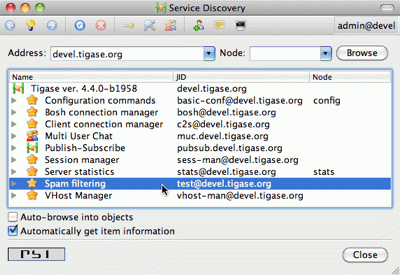

You component still shows in the service discovery list as an element with "Undefined description". It also doesn’t provide any interesting features or sub-nodes.
In this article I will show how to, in a simple way, change the basic component information presented on the service discovery list and how to add some service disco features. As a bit more advanced feature the guide will teach you about adding/removing service discovery nodes at run-time and about updating existing elements.
Component description and category type can be changed by overriding two following methods:
@Override
public String getDiscoDescription() {
return "Spam filtering";
}
@Override
public String getDiscoCategoryType() {
return "spam";
}Please note, there is no such 'spam' category type defined in the Service Discovery Identities registry. It has been used here as a demonstration only. Please refer to the Service Discovery Identities registry document for a list of categories and types and pick the one most suitable for you.
After you have added the two above methods and restarted the server with updated code, have a look at the service discovery window. You should see something like on the screenshot.

Although this was easy, this particular change doesn’t affect anything apart from just a visual appearance. Let’s get then to more advanced and more useful changes.
One of the limitations of methods above is that you can not update or change component information at run-time with these methods. They are called only once during setProperties(…) method call and the component service discovery information is created and prepared for later use. Sometimes, however it is useful to be able to change the service discovery during run-time.
In our simple spam filtering component let’s show how many messages have been checked out as part of the service discovery description string. Every time we receive a message we can to call:
updateServiceDiscoveryItem(getName(), null, getDiscoDescription() + ": [" + (++messagesCounter) + "]", true);
A small performance note, in some cases calling updateServiceDiscoveryItem(…) might be an expensive operation so probably a better idea would be to call the method not every time we receive a message but maybe every 100 times or so.
The first parameter is the component JID presented on the service discovery list. However, Tigase server may work for many virtual hosts so the hostname part is added by the lower level functions and we only provide the component name here. The second parameter is the service discovery node which is usually null for top level disco elements. Third is the item description (which is actually called name in the disco specification). The last parameter specifies if the element is visible to administrators only.

The complete method code is presented below and the screenshot above shows how the element of the service discovery for our component can change if we apply our code and send a few messages to the component.
Using the method we can also add submodes to our component element. The XMPP service discovery really is not for showing application counters, but this case it is good enough to demonstrate the API available in Tigase so we continue with presenting our counters via service discovery. This time, instead of using null as a node we put some meaningful texts as in example below:
// This is called whenever a message arrives // to the component updateServiceDiscoveryItem(getName(), "messages", "Messages processed: [" + (++messagesCounter) + "]", true); // This is called every time the component detects // spam message updateServiceDiscoveryItem(getName(), "spam", "Spam caught: [" + (++totalSpamCounter) + "]", true);
Again, have a look at the full method body below for a complete code example. Now if we send a few messages to the component and some of them are spam (contain words recognized as spam) we can browse the service discovery of the server. Your service discovery should show a list similar to the one presented on the screenshot on the left.
Of course depending on the implementation, initially there might be no sub-nodes under our component element if we call the updateServiceDiscoveryItem(…) method only when a message is processed. To make sure that sub-nodes of our component show from the very beginning you can call them in setProperties(…) for the first time to populate the service discovery with initial sub-nodes.
Please note, the updateServiceDiscoveryItem(…) method is used for adding a new item and updating existing one. There is a separate method though to remove the item:
void removeServiceDiscoveryItem(String jid, String node, String description)
Actually only two first parameters are important: the jid and the node which must correspond to the existing, previously created service discovery item.
There are two additional variants of the update method which give you more control over the service discovery item created. Items can be of different categories and types and can also present a set of features.
The simpler is a variant which sets a set of features for the updated service discovery item. There is a document describing existing, registered features. We are creating an example which is going to be a spam filter and there is no predefined feature for spam filtering but for purpose of this guide we can invent two feature identification strings and set it for our component. Let’s call update method with following parameters:
updateServiceDiscoveryItem(getName(), null, getDiscoDescription(), true, "tigase:x:spam-filter", "tigase:x:spam-reporting");
The best place to call this method is the setProperties(…) method so our component gets a proper service discovery settings at startup time. We have set two features for the component disco: tigase:x:spam-filter and tigase:x:spam-reporting. This method accepts a variable set of arguments so we can pass to it as many features as we need or following Java spec we can just pass an array of Strings.
Update your code with call presented above, and restart the server. Have a look at the service discovery for the component now.
The last functionality might be not very useful for our case of the spam filtering component, but it is for many other cases like MUC or PubSub for which it is setting proper category and type for the service discovery item. There is a document listing all currently registered service discovery identities (categories and types). Again there is entry for spam filtering. Let’s use the automation category and spam-filter type and set it for our component:
updateServiceDiscoveryItem(getName(), null, getDiscoDescription(), "automation", "spam-filtering", true, "tigase:x:spam-filter", "tigase:x:spam-reporting");
Of course all these setting can be applied to any service discovery create or update, including sub-nodes. And here is a complete code of the component:
import java.util.Arrays;
import java.util.Map;
import java.util.logging.Logger;
import tigase.server.AbstractMessageReceiver;
import tigase.server.Packet;
import tigase.util.JIDUtils;
import tigase.xmpp.StanzaType;
public class TestComponent extends AbstractMessageReceiver {
private static final Logger log =
Logger.getLogger(TestComponent.class.getName());
private static final String BAD_WORDS_KEY = "bad-words";
private static final String WHITELIST_KEY = "white-list";
private static final String PREPEND_TEXT_KEY = "log-prepend";
private static final String SECURE_LOGGING_KEY = "secure-logging";
private static final String ABUSE_ADDRESS_KEY = "abuse-address";
private static final String NOTIFICATION_FREQ_KEY = "notification-freq";
private String[] badWords = {"word1", "word2", "word3"};
private String[] whiteList = {"admin@localhost"};
private String prependText = "Spam detected: ";
private String abuseAddress = "abuse@locahost";
private int notificationFrequency = 10;
private int delayCounter = 0;
private boolean secureLogging = false;
private long spamCounter = 0;
private long totalSpamCounter = 0;
private long messagesCounter = 0;
@Override
public void processPacket(Packet packet) {
// Is this packet a message?
if ("message" == packet.getElemName()) {
updateServiceDiscoveryItem(getName(), "messages",
"Messages processed: [" + (++messagesCounter) + "]", true);
String from = JIDUtils.getNodeID(packet.getElemFrom());
// Is sender on the whitelist?
if (Arrays.binarySearch(whiteList, from) < 0) {
// The sender is not on whitelist so let's check the content
String body = packet.getElemCData("/message/body");
if (body != null && !body.isEmpty()) {
body = body.toLowerCase();
for (String word : badWords) {
if (body.contains(word)) {
log.finest(prependText + packet.toString(secureLogging));
++spamCounter;
updateServiceDiscoveryItem(getName(), "spam", "Spam caught: [" +
(++totalSpamCounter) + "]", true);
return;
}
}
}
}
}
// Not a SPAM, return it for further processing
Packet result = packet.swapElemFromTo();
addOutPacket(result);
}
@Override
public int processingThreads() {
return Runtime.getRuntime().availableProcessors();
}
@Override
public int hashCodeForPacket(Packet packet) {
if (packet.getElemTo() != null) {
return packet.getElemTo().hashCode();
}
// This should not happen, every packet must have a destination
// address, but maybe our SPAM checker is used for checking
// strange kind of packets too....
if (packet.getElemFrom() != null) {
return packet.getElemFrom().hashCode();
}
// If this really happens on your system you should look carefully
// at packets arriving to your component and decide a better way
// to calculate hashCode
return 1;
}
@Override
public Map<String, Object> getDefaults(Map<String, Object> params) {
Map<String, Object> defs = super.getDefaults(params);
defs.put(BAD_WORDS_KEY, badWords);
defs.put(WHITELIST_KEY, whiteList);
defs.put(PREPEND_TEXT_KEY, prependText);
defs.put(SECURE_LOGGING_KEY, secureLogging);
defs.put(ABUSE_ADDRESS_KEY, abuseAddress);
defs.put(NOTIFICATION_FREQ_KEY, notificationFrequency);
return defs;
}
@Override
public void setProperties(Map<String, Object> props) {
super.setProperties(props);
badWords = (String[])props.get(BAD_WORDS_KEY);
whiteList = (String[])props.get(WHITELIST_KEY);
Arrays.sort(whiteList);
prependText = (String)props.get(PREPEND_TEXT_KEY);
secureLogging = (Boolean)props.get(SECURE_LOGGING_KEY);
abuseAddress = (String)props.get(ABUSE_ADDRESS_KEY);
notificationFrequency = (Integer)props.get(NOTIFICATION_FREQ_KEY);
updateServiceDiscoveryItem(getName(), null, getDiscoDescription(),
"automation", "spam-filtering", true,
"tigase:x:spam-filter", "tigase:x:spam-reporting");
}
@Override
public synchronized void everyMinute() {
super.everyMinute();
if ((++delayCounter) >= notificationFrequency) {
addOutPacket(Packet.getMessage(abuseAddress, getComponentId(),
StanzaType.chat, "Detected spam messages: " + spamCounter,
"Spam counter", null, newPacketId("spam-")));
delayCounter = 0;
spamCounter = 0;
}
}
@Override
public String getDiscoDescription() {
return "Spam filtering";
}
@Override
public String getDiscoCategoryType() {
return "spam";
}
}